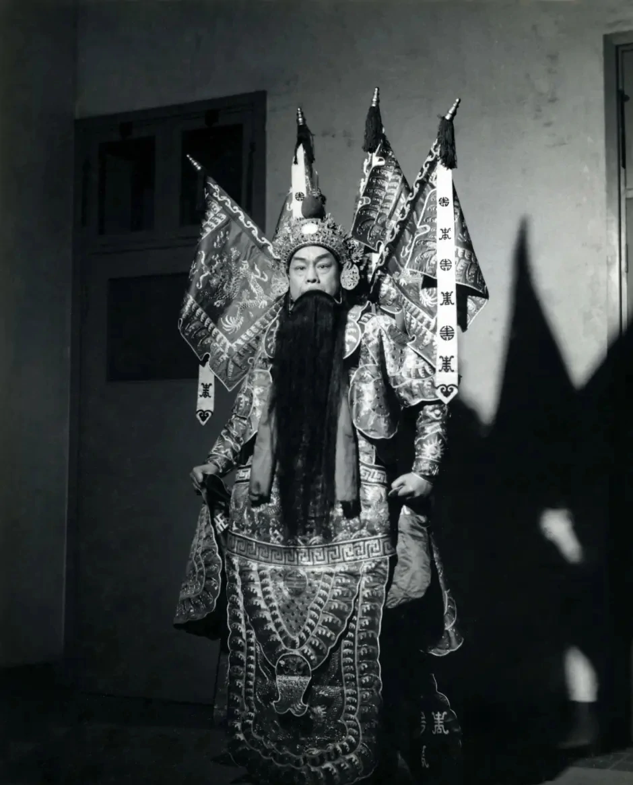
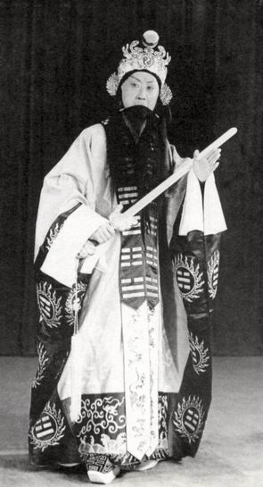
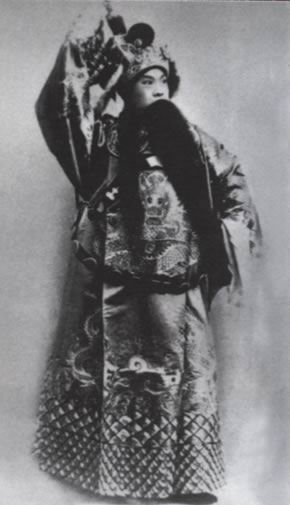
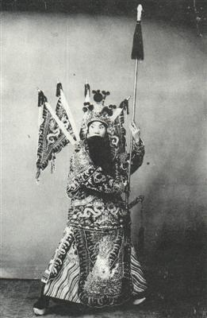
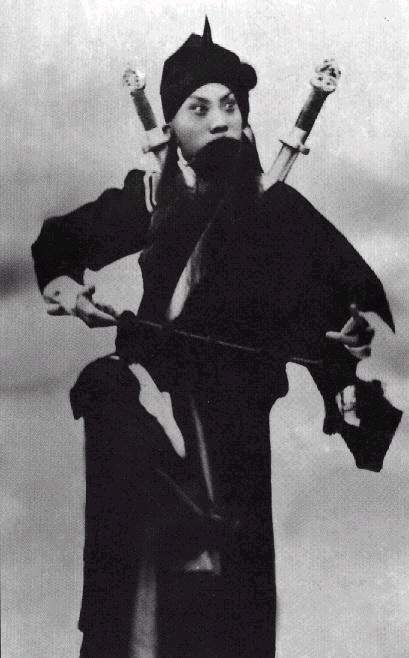
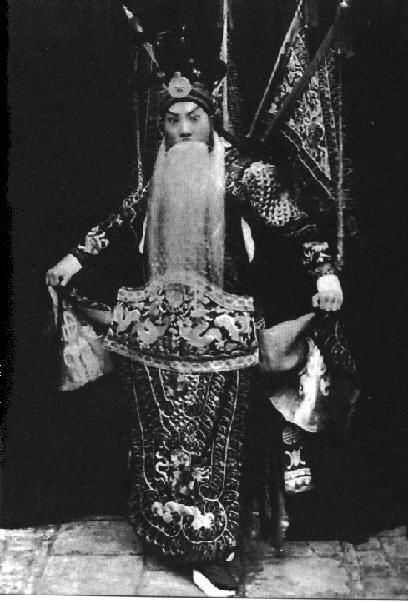
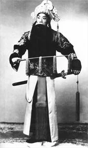
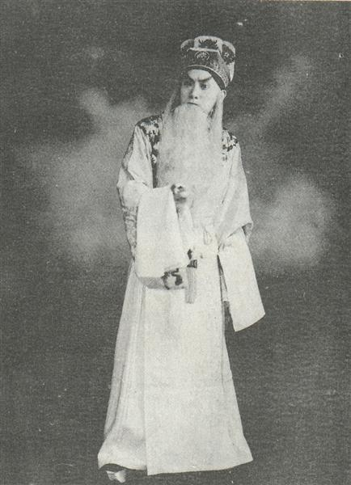
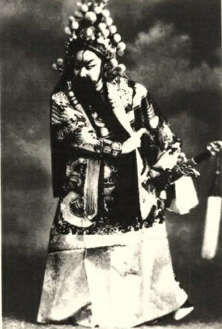

九大暗黑系男神（祖师爷）

周信芳
1895~1975
（麒麟童）
麒派创始人
《文天祥》中 饰 文天祥
“天昏黄 角鼓哀 悲声激荡 丹心千古 日月增光”——《文天祥》

马连良1901~1966
马派创始人
《借东风》中 饰 诸葛亮

高庆奎1890~1942
高派创始人
《哭秦庭》中 饰 申包胥

言菊朋1890~1942
言派创始人
《宁武关》中 饰 周遇吉

余叔岩1890~1943
余派创始人
《洗浮山》中 饰 贺天保

谭富英1906~1977
（新）谭派创始人
《定军山》中 饰 黄忠

杨宝森1909~1958
杨派创始人
《伍子胥》中 饰 伍员

奚啸伯1910~1977
奚派创始人
《白帝城》中 饰 刘备

唐韵笙1903~1971
唐派创始人
《古城会》中 饰 关羽